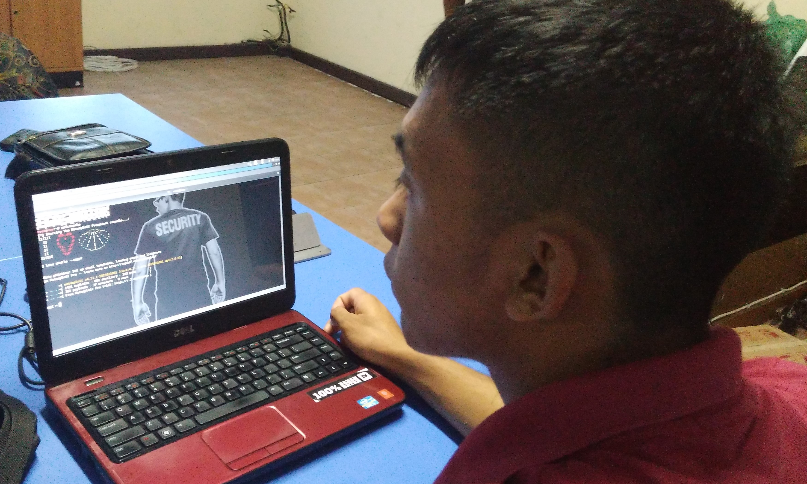
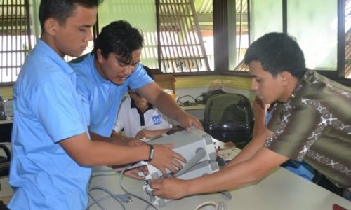
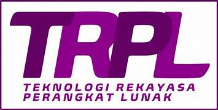
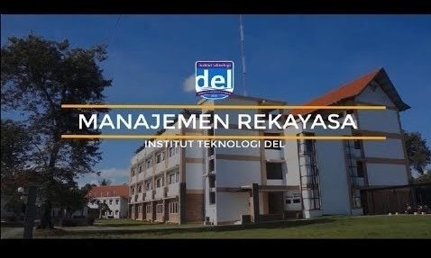

Menjadi Fakultas Pembelajar yang unggul di bidang Informatika dan Teknik Elektro pada tahun 2018 di tingkat nasional.
MISI
Menyelenggarakan dan mengembangkan proses pendidikan di bidang
Informatika dan Teknik Elektro yang unggul, berkesinambungan, dan bermanfaat bagi
masyarakat.
Mengembangkan, menciptakan, dan menyebarkan ilmu pengetahuan dan teknologi
secara khusus di bidang Informatika dan Teknik Elektro.
Meningkatkan peranan Fakultas agar mampu menjadi pembaru kemampuan,
keterampilan pilihan rujukan, dan pengembangan rekayasa karya masyarakat,
khususnya dalam bidang Informatika dan Teknik Elektro.
Meningkatkan peran nyata Fakultas kepada masyarakat melalui penerapan Tridarma
Perguruan Tinggi secara khusus di bidang Informatika dan Teknik Elektro
Program Studi

S1 INFORMATIKA
S1 SISTEM INFORMASI

S1 TEKNIK ELEKTRO
Fakultas Vokasi
Pendidikan vokasi merupakan jenjang pendidikan pertama di Institut Teknologi Del sejak berdiri pada tahun 2001 (dahulu bernama Politeknik Informatika Del). Vokasi merupakan pendidikan tinggi dengan fokus pada praktik kerja yang dapat menunjang keahlian di bidang studi tertentu. Program vokasi bertujuan mempersiapkan lulusannya menjadi tenaga yang siap kerja dan mampu bersaing secara global di Dunia Usaha dan Dunia Industri (DUDI).
"Ketiga program studi vokasi di IT Del telah terakreditasi B dari BAN-PT.
Beberapa keunggulan dari pendidikan vokasi adalah: belajar di program studi yang spesifik, belajar sesuai minat dan profesi yang diinginkan, siap kerja karena dibekali kemampuan praktik yang tinggi, sehingga lulusan pendidikan vokasi banyak dibutuhkan perusahaan.
Program Studi

D4 REKAYASA PERANGKAT LUNAK
D3 TEKNOLOGI INFORMASI
D3 TEKNOLOGI KOMPUTER
Fakultas Teknik Industri (FTI)
Manajemen Rekayasa (Engineering Management) adalah penggabungan dari keilmuan teknik/rekayasa (engineering) dengan ilmu manajemen yang diaplikasikan untuk menyelesaikan persoalan-persoalan dalam suatu sistem kompleks. Aspek keilmuan teknik (engineering) dari Manajemen Rekayasa terlihat melalui penerapan matematika dan ilmu pengetahuan alam yang diperoleh melalui pembelajaran, pengalaman, dan praktek empiris untuk menemukan cara-cara yang optimal dalam memanfaatkan material dan sumber daya lain dalam mengembangkan teknologi. Aspek keilmuan manajemen dari Manajemen Rekayasa muncul dalam penerapan ilmu-ilmu pendukung keputusan yang dapat diaplikasikan dalam aktivitas-aktivitas pengembangan organisasi dalam mencapai tujuannya, yang diperoleh melalui pembelajaran dan praktek empiris dalam ilmu perilaku organisasi, analisa finansial, manajemen sumber daya manusia, dan analisa keputusan.
Program Studi

S1 MANAJEMEN REKAYASA
S1 TEKNIK METALURGI
Fakultas Bioteknologi
VISI
Menjadikan program studi Sarjana Teknik Bioproses menjadi program studi yang unggul secara nasional dan internasional dalam bidang pendidikan, penelitian, pengembangan dan penerapan ilmu dan teknologi, serta pengabdian kepada masyarakat.
MISI
Menyelenggarakan dan mengembangkan proses pendidikan yang unggul, berkesinambungan dan bermanfaat bagi masyarakat.
Mengembangkan, menciptakan, dan menyebarkan ilmu pengetahuan dan teknologi khususnya Teknik Bioproses.
Meningkatkan peranan program studi adar mampu menjadi pembaharu dalam kemampuan, keterampilan pilihan rujukan, dan pengembangan rekayasa karya masyarakat, khususnya dalam bidang ilmu pengetahuan dan teknologi khususnya Teknik Bioproses.
Meningkatkan peran nyata kepada masyarakat melalui penerapan tridarma perguruan tinggi.
Menjadikan program studi Teknik Bioproses sebagai program studi yang memiliki sistem pengelolaan yang baik, efisien, dan produktif.